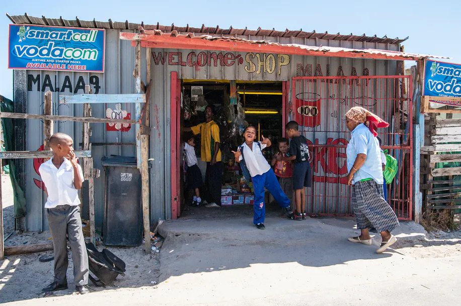

Make art for impoverished shops in developing countries.
ARTISTICA
Memebers: 4 Chat Room
Status: Open

In other countries, shops can’t afford the cost for a skilled artist. Hopefully with this initiative, we will be able to put more well made signs up, which directly improves the shop and the brave entrepreneurs that support them. Also, the artist, by the boundary crossing effect of art, is able to connect further with the person on the other end. This helps them with concentration, writing, and other communication skills with the investment of a short amount of time. In other countries, shops can’t afford the cost for a skilled artist. Hopefully with this initiative, we will be able to put more well made signs up, which directly improves the shop and the brave entrepreneurs that support them. Also, the artist, by the boundary crossing effect of art, is able to connect further with the person on the other end. This helps them with concentration, writing, and other communication skills with the investment of a short amount of time. In other countries, shops can’t afford the cost for a skilled artist. Hopefully with this initiative, we will be able to put more well made signs up, which directly improves the shop and the brave entrepreneurs that support them. Also, the artist, by the boundary crossing effect of art, is able to connect further with the person on the other end. This helps them with concentration, writing, and other communication skills with the investment of a short amount of time.